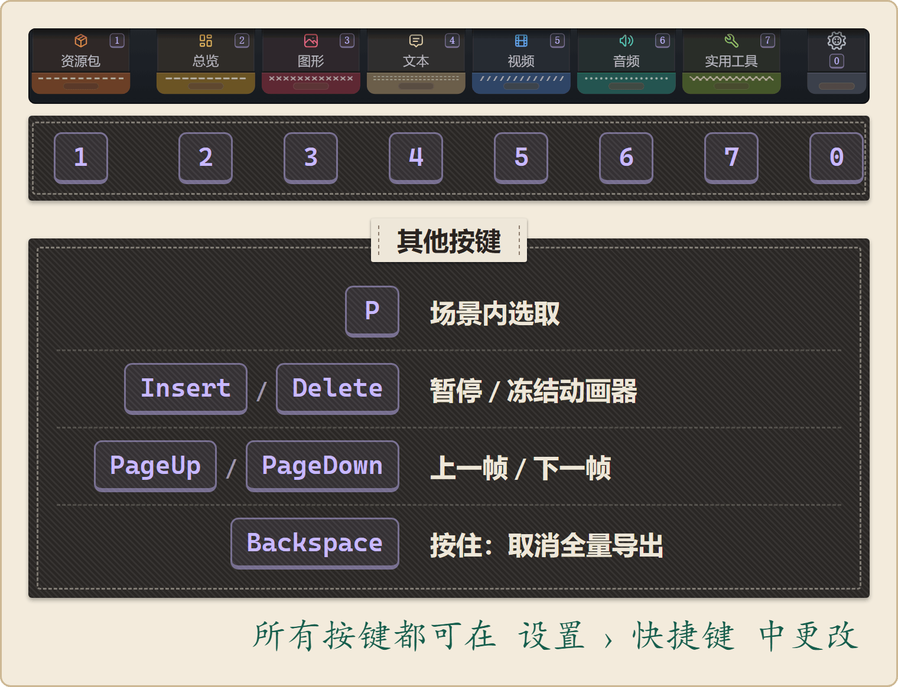
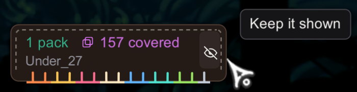

热键
参考 · 面向所有人
Stitchwork 在游戏里用到的所有按键。
每个按键都可以在设置里修改。
说明：只要屏幕上有文本输入框处于输入状态（搜索框、对话编辑器、条件编辑器），Stitchwork 的快捷键就会暂时失效，免得你打字时误触。点击输入框以外的地方、右键单击，或在单行输入框里按 Enter，都会结束编辑。Esc 不会结束编辑：Esc 归游戏使用。
Esc 会打开游戏菜单，也不能设为 Stitchwork 的按键。在 Stitchwork 里要取消操作，请用右键。
默认按键

| 默认按键 | 功能 | 备注 |
|---|---|---|
1（数字行，Alpha1） | 打开或关闭资源包 | 资源包管理器面板。如果有还没应用的更改，第一次关闭时会先问你（见下文）。 |
2（数字行，Alpha2） | 打开或关闭总览 | 总览面板：健康自检、工作区文件夹、图像编辑程序、目标资源包（附带推送和拉取按钮），以及按资源类型分类的文件列表。适合用来快速检查一下运行状况。 |
3（数字行，Alpha3） | 打开或关闭图形 | 预览播放和资源库面板；模式有动画、T2D 贴图、T2D 日志和颜色。在这里查找精灵图、浏览图集、检查动画，还能给场景重新上色（色彩）。 |
4（数字行，Alpha4） | 打开或关闭文本 | 对话和界面文本的编辑器。最近和编辑器面板；模式有游戏文本和翻译。最近面板会列出游戏在本次运行中用过的文本键。 |
5（数字行，Alpha5） | 打开或关闭视频 | 只有一个过场动画面板：过场动画替换表和过场动画实时日志。 |
6（数字行，Alpha6） | 打开或关闭音频 | 实时日志和音频浏览器（可以搜索）面板。在实时日志里点击一个名称，就能复制它，并在音频浏览器里找到它。 |
7（数字行，Alpha7） | 打开或关闭实用工具 | 探针（帧率、内存，以及用来排查卡顿的帧性能分析器）和资源导出面板。资源导出面板里有精灵图导出开关、文本导出和全量导出（资源导出与全量导出）。这个标签页以前叫“性能”。 |
0（数字行，Alpha0） | 打开或关闭设置 | 设置窗口：对整个 Stitchwork 都起作用的设置，按键也在其中。顶部标签页最右端的齿轮标签也能打开它。参见设置。 |
| P | 开始场景内选取 | 点击一个对象，就会在图形标签页里打开它：带动画的 tk2d 对象在动画中打开，T2D 精灵图在T2D 贴图中打开。用鼠标滚轮可以在重叠的对象之间切换。再按一次 P 或右键单击即可取消。 |
| Insert / Delete | 暂停 / 冻结所选的动画器 | 图形 › 动画的播放控制（B8）。 |
| PageUp / PageDown | 上一帧 / 下一帧 | 切换帧时会先暂停正在播放的动画，所以你不用先暂停。播放控制按钮上会实时显示这两个键。 |
FullDumpKey（默认未绑定；按住 1.5 秒） | 全量导出资源 | 按住 1.5 秒才会开始，轻按一下没有反应。只有开启了载入场景时导出精灵图，并且游戏正在进行中，这个按键才有效。否则一按下就会显示原因。 |
| Backspace（按住约一秒） | 取消正在进行的全量导出 | FullDumpCancelKey。不管怎样，进度都会保存下来。 |
如果你的按键和这张表不一样，可以在设置 › 快捷键里查看 Stitchwork 在你的游戏里使用的按键，动画模式的播放控制按钮上也会显示。旧版本留下的 Stitchwork.cfg 可能还保留着旧按键。
修改按键
打开设置（按 0，或点击齿轮标签），进入快捷键。Stitchwork 的所有按键都在这里，修改后立即生效。
- 点击一个按键，再按下新的键。右键单击或点击别处都会取消。
- 要移除某个按键，先点击它，再点击无快捷键。
- 右键单击某个按键，就能恢复它的默认值。
- 恢复默认会把所有按键恢复为默认值，需要点击两次。
- 如果某个按键和另一个 Stitchwork 按键重复，它会变红。这时你可以交换这两个按键、撤销，或者两者都保留。
- 如果游戏本身也用到某个按键，它会变成琥珀色。它的提示会用你的语言写出游戏里对应的操作，例如“跳跃”。之后按下这个键，两边的操作都会触发。你可以撤销，或者保留这个按键。
这些按键也写在设置文件 Stitchwork.cfg 里，位于 [Keybinds] 分区：
BepInEx/config/Stitchwork.cfg配置项名称有 ShowPackManager、ShowSettings、DevHubDashboard … DevHubPerformance（实用工具标签页在这里还沿用旧名字）、WorldPick、FullDumpKey、FullDumpCancelKey，以及播放控制用的 AnimationController…Key 系列按键。取值是 Unity 的某个 KeyCode 名称。在文件里保存的更改会立即生效，游戏运行时也一样。
常见的改键原因：
- 数字行按键（
Alpha0-Alpha7）可能和你在游戏里给道具设置的快捷键冲突。如果游戏用到了你的某个按键，设置 › 快捷键会把它显示成琥珀色。把它改成游戏没有用到的键就行。
顶部标签页与面板
把鼠标移到屏幕顶部边缘，顶部标签页就会落下来：资源包、总览、图形、文本、视频、音频和实用工具。最右端还有一个窄窄的齿轮标签，用来打开设置。每个标签页的右上角都标着它的按键；齿轮标签的按键标在齿轮下方。点击标签页会打开它，再点一次就会关闭。面板本身没有关闭按钮。
在比 16:9 更宽的屏幕上，游戏会把 HUD 画在中间的 16:9 区域里。顶部标签页和状态角标也会留在这个区域内，和游戏自己的界面待在一起。面板仍然停靠在屏幕边缘。
有事情等你决定时，对应的标签页会闪烁，比如你还没选工作区文件夹或图像编辑程序。它的提示会说明在等什么。标签页收起来的时候，闪烁的标签页会从顶部边缘稍稍露出来。
在设置 › 常规中，用顶部标签页开关可以隐藏这些标签页，用创作者标签页开关可以隐藏创作者标签页（设置）。无论哪种设置，按键都照常可用。
资源包面板、设置窗口和开发中心的面板不会同时显示：打开其中一个，其他的就会关闭。资源包面板会保留你暂存的更改。
用鼠标操作面板
每个标签页打开后都是停靠面板。鼠标操作如下：
- 按住标题栏或边框就能拖动面板。拖到屏幕边缘再松开，它就会停靠在那里。
- 双击标题栏，面板会回到原位。
- 浮动面板卷起后只剩一条横栏，这时照样可以拖着横栏移动它。把它放进停靠区，它就会在那里展开；双击横栏，它会回到原位。
- 点击标题栏上的箭头，会把这一个面板朝它停靠的那条边卷起；再点一次就会展开。
- 右键单击，会把所有打开的面板卷起来让开位置；再右键单击一次，它们就会展开。如果有操作正等着取消（拖动中的面板、等你再点一次确认的按钮、展开的列表），右键会先取消它。
- 标题旁边的 i 按钮会显示这个标签页的帮助。
其他模组
DebugMod 的面板一出现，Stitchwork 的面板就会关闭。DebugMod 的面板显示期间，Stitchwork 的按键什么都打不开，还会弹出一条提示告诉你该怎么做：先用 DebugMod 的切换键隐藏它的面板，再按一次按键。遇到 Benchwarp 的菜单、FsmMaster 的叠加层、Architect 的编辑模式和 UnityExplorer 的菜单时，Stitchwork 也会这样让位。在 Architect 的编辑模式下，Stitchwork 的按键什么都打不开，因为 Architect 用数字键来选它的工具。第一次按下时，会弹出一条通知，告诉你 Architect 的编辑键是哪个。详见配套模组。
对话框
有些操作会先弹出对话框问你。每个选项都标着一个数字键：按住这个键，就会选中对应的选项。按住 Enter 会选中第一个选项，也就是最稳妥的那个。右键单击、点击对话框外面，或者点击取消，都会关闭对话框，什么也不做。
对话框显示期间，Stitchwork 的快捷键不起作用。
通知
通知会告诉你刚刚发生了什么：保存的文件已经生效、资源包已经应用，或者某个按键此刻什么都打不开。想留住通知，就把鼠标指针放在它上面：倒计时会停下，角上还会出现一个 x。点击通知上的任意位置就能关掉它。如果你在隐藏光标的状态下玩游戏，通知会自己关闭。
翻译模式的按键
在文本标签页的翻译模式下，光标在译文里时：
Ctrl+Enter相当于点击主按钮（保存、通过或保留）。Ctrl+Up和Ctrl+Down跳到上一条或下一条字符串。
Awoo!
资源包管理器（独立于开发中心）
资源包管理器是一个独立的面板，标题是资源包，和开发中心的那些标签页不是一回事。它会列出你安装的资源包，让你启用或关闭它们、设置它们的启用条件，以及切换配置方案。
如果还有没应用的更改，第一次关闭时会问你怎么处理：应用并关闭、放弃并关闭或保留并关闭。再按一次按键，就会关闭面板并保留这些更改。
状态角标
左下角的小徽章就是状态角标。它不是用按键打开的窗口。第一行显示启用了多少个资源包；如果有资源包替换了相同的资源，还会显示“N 项被覆盖”。第二行显示当前场景。把鼠标悬停在角标上，可以看到精灵图、音频片段和图集的数量。
点击角标会打开资源包面板。
角标右端的眼睛图标用来开启自动隐藏：开启后，角标会滑出屏幕左边缘，直到光标靠近那个角落才出来。隐藏期间，屏幕上不会留下角标的任何部分。想彻底关掉角标，请在设置 › 常规中关闭状态栏。在选取模式下，以及 DebugMod 的面板显示时，角标也会隐藏。

设置
按 0，或点击顶部标签页最右端的齿轮标签。设置窗口里放着对整个 Stitchwork 都起作用的设置。每项更改都会立即生效，没有应用按钮。页面上方的小标签可以直接跳到各个分区：
- 常规：包括界面语言、顶部标签页、创作者标签页、减少动画和状态栏。如果装了 UnityExplorer 或 CinematicUnityExplorer，这里还会出现为 模组名 让位：关掉它，打开那个模组的菜单时，Stitchwork 也会继续开着。关掉创作者标签页后，只会显示资源包标签页和齿轮标签，资源包标签页还会移到最右端，紧挨着齿轮标签。还有三个滑杆用来设置面板的外观：参见面板滑杆。
- 文件夹：包括全局资源包文件夹。修改之后，资源包管理器会立即从新文件夹读取资源包，你还没应用的更改也会保留。
- 快捷键：Stitchwork 的所有按键。点击一个按键，再按下新的键即可。参见修改按键。
- 渲染：包括透视前景（默认关闭：大黄蜂前方的场景美术会在柔和的圆形范围内变淡，让你看到挡在后面的她；会消耗帧率）、清理精灵图边缘（CSP 修复）、后备字体、资源包字体，以及贴布绣。
- 视频：三个和过场动画有关的开关。
- 高级选项：包括日志文件（打开日志、在文件夹中显示）、详细日志，以及应用时重新载入房间（默认开启；关闭后，应用会原地切换资源包，参见资源包管理器）。
关掉顶部标签页后，用按键照样能打开所有内容。窗口底部的打开配置文件会打开 BepInEx/。在这个文件里保存的更改同样会立即生效，游戏运行时也一样。会有一条消息列出改动了哪些设置。下面这些设置要到下次启动才会生效，消息里也会说明：IncrementalGCTimeSliceMs、HeapReserveMB、AutoEnableIncrementalGC 和 WorkingRootPath。
面板滑杆
常规里有三个滑杆用来设置面板的外观。文字和控件始终完全可见。
| 滑杆 | 默认值 | 作用 |
|---|---|---|
| 聚焦面板 | 1 | 你正在使用面板时，面板边框和页面的不透明度。指针停在面板上、拖动面板，或者选中了面板里的输入框，都算正在使用。 |
| 失焦面板 | 0.55 | 指针在别处时的不透明度。 |
| 毛玻璃效果 | 关闭 | 把半透明面板后面的游戏画面和 HUD 模糊掉，并加上细微的颗粒。设为 0 时关闭，不消耗任何性能。其他模组的面板不在模糊范围内。目前只在 Windows 上测试过。 |
每个滑杆所在行的末端有一个箭头图标，点击它就会恢复默认值。它的提示会显示默认值。
Stitchwork 不提供的快捷键
Stitchwork 没有“开关资源包 X”这样的快捷键，也没有给单个资源包配的快捷键。如果你想快速切换，可以给那个资源包设置启用条件——它会根据游戏状态自动启用或关闭。只是偶尔手动切换一下的话，用资源包管理器就行。